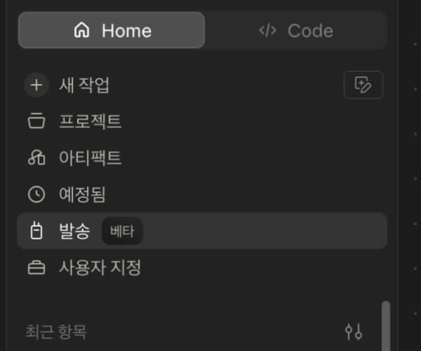
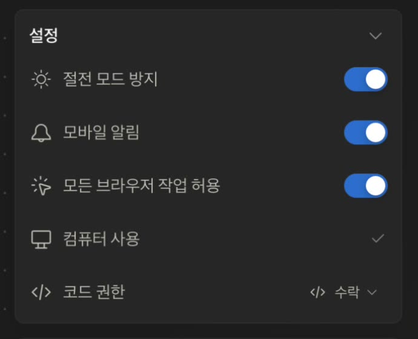
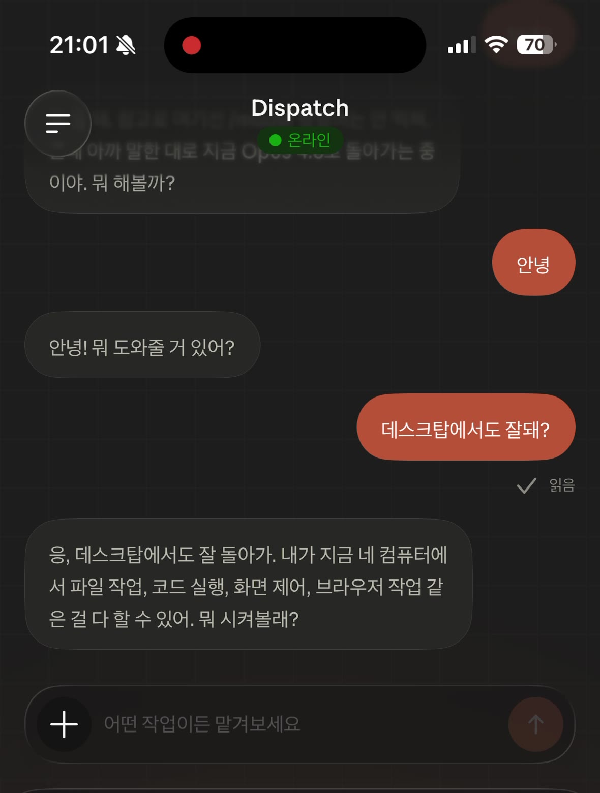

Claude에게 작업을 맡기고 알아서 진행하게 두는 기능이에요. 원래는 PC(데스크톱)에서만 됐는데, 이제 모바일과 웹으로 확장됐습니다.
핵심은 같은 대화가 기기 사이에서 이어진다는 거예요. PC에서 시작한 대화를, 폰을 켜면 그 자리 그대로 이어받습니다. 따로 옮기거나 복붙할 필요가 없어요.
※ 아래 스샷은 실제 Claude 앱 화면(한국어 설정)이에요. 아직 베타라 메뉴 이름·위치는 업데이트로 조금씩 바뀔 수 있습니다.
계정 하나만 있으면 돼요. 스샷 보면서 그대로



가장 눈에 띄는 건 모바일에서 /model 같은 일부 슬래시 명령이 아직 안 먹힌다는 점이에요. 모델을 바꾸는 건 PC에서 미리 해두는 게 편해요. (예: PC에서 Opus 4.8로 맞춰두면 폰에서도 그 대화는 그대로 이어집니다.)
대화 싱크 자체는 잘 되지만, 세밀한 설정·명령은 아직 데스크톱이 완전하다고 보면 돼요. 베타인 만큼 앞으로 계속 채워질 부분입니다.
← AI TIGER MASK 홈 · © 2026 DONGHYUCK YANG